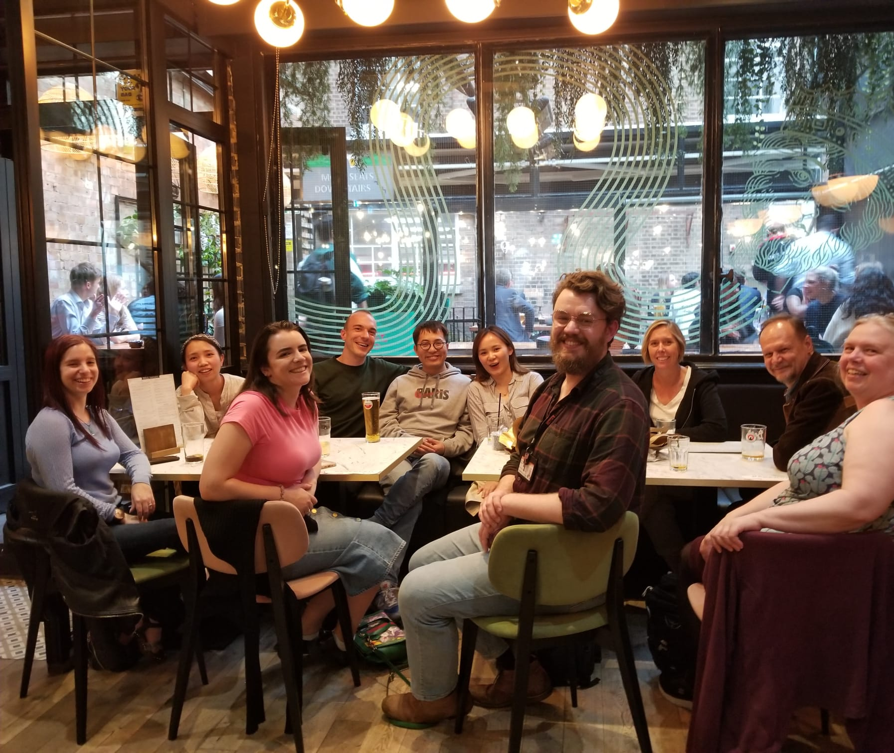

Academic Researcher in stem cells and retroviruses
Welcome to my personal academic profile page. I am an active researcher in the field of blood stem cell biology. My work primarily focuses on the expansion of human hematopoietic stem cells.
List of notable talks and conferences where I have presented my research:
Read my latest blog posts on various research topics, methodologies, and my experiences in the academic world:
Stay up-to-date with my latest research news, upcoming talks, and publications:
You can reach me via email at: maorong.xie@york.ac.uk